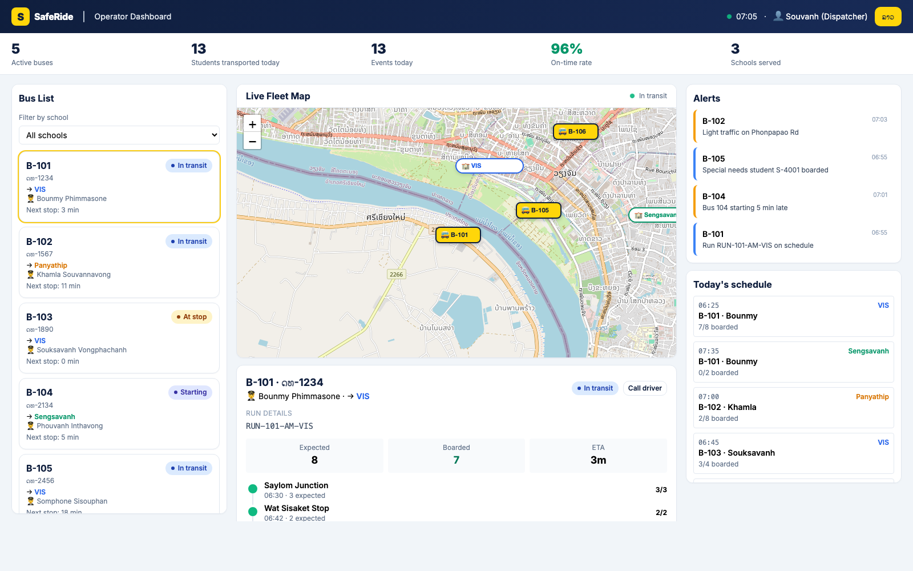
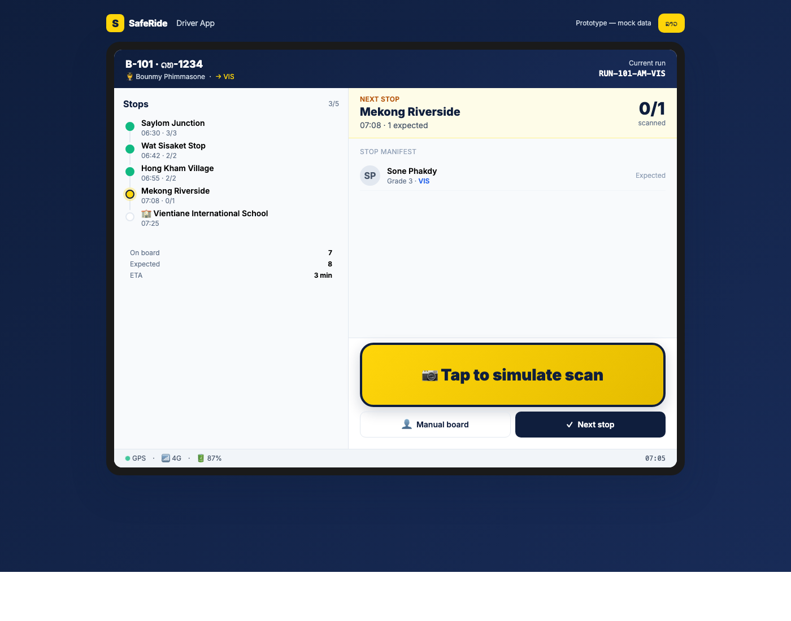
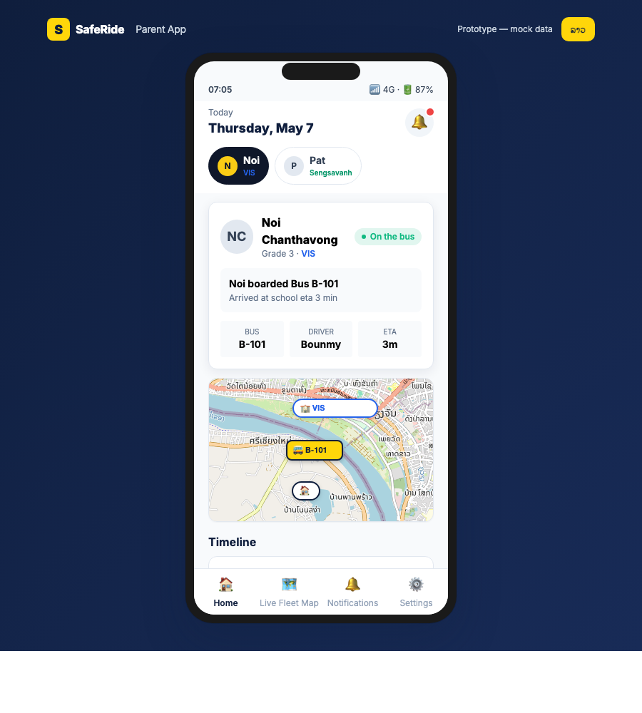
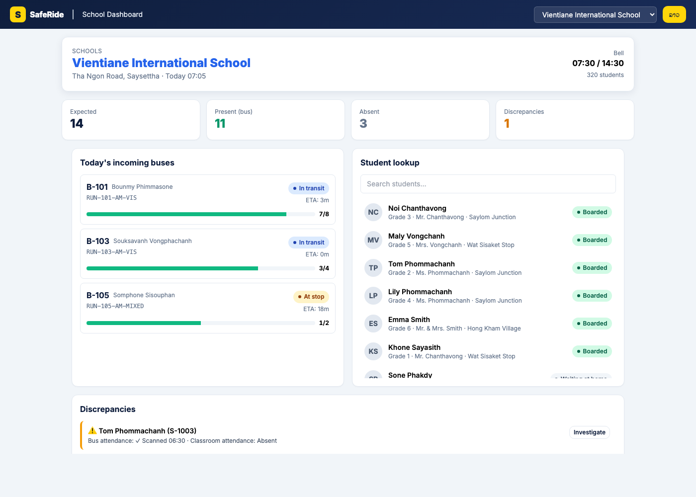

A modern school bus platform for bus companies serving many schools.
SafeRide is a complete school bus tracking system, built for a bus company that operates across many schools. One platform, four apps, one simple promise: every parent knows where their child is, every minute of the school commute.
Run your entire fleet across every school you serve from one dashboard. Schools, buses, drivers, routes — all in one place.
Each student has a QR code on their school ID. The driver scans it as they board and exit. No expensive hardware, no batteries, no per-student fees.
Every scan is timestamped, GPS-tagged, and pushed to parents in seconds. Phone calls to the school office go away.
Today, parents, schools, and bus companies all operate without real visibility. Mistakes happen — sometimes serious ones — and trust is hard to rebuild.
"Did my child get on the bus?" "Why is it late?" Endless calls to the school. No real answers.
Especially with young students. Drivers can't memorize 40 students × multiple schools. One mistake makes the news.
Drivers tick names by hand. Schools and the bus company reconcile by phone. Hours wasted every single day.
Real, recurring incidents. Once it happens, the operator's reputation never fully recovers.
Every school day, every student. Each scan creates one verified event — and triggers one parent notification.
Each event records: student · bus · stop · timestamp · GPS · driver. Every report, every alert, every notification builds on this single source of truth.
Everyone who matters in the school commute gets a tool designed for their job.
Live fleet view across every school. Dispatchers see every bus, every run, every alert in one place.
Tablet-first app. Today's route, manifest at every stop, one-tap QR scan, end-of-route check.
Live bus location, instant notifications when their child boards or arrives. Multi-child support.
Per-school view. See incoming buses, attendance, and reconcile against classroom in seconds.

One screen runs the whole operation, across every school.
A tablet mounted in the bus shows the driver everything they need — and nothing they don't.

Parents see exactly one thing: where their child is, right now.


School admins answer parent calls in seconds, not in twenty-minute phone tag.
The system actively refuses to let safety-critical mistakes happen.
If a student scans onto a bus they're not assigned to, the driver tablet flashes red. Doors don't close until resolved.
End of every run, the driver must confirm "I have walked the bus" before the run can be closed. No child left behind.
For young children, the driver sees the list of approved adults at the home stop. No recognized adult — no drop-off.
Per-parent visibility. Court-restricted parents do not see live location data. The system protects, not enables.
Pick 2 buses and 1 school for a 30-day pilot. We bring the system, train your drivers, onboard the first parents. You bring the buses and the relationships. After 30 days we review the results together — and decide if we scale.